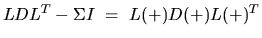

| Routine | Description | |
| real | complex | |
| SLAED5 | Used by SSTEDC. Solves the 2-by-2 secular equation. | |
| SLAED6 | Used by SSTEDC. Computes one Newton step in solution of secular equation. | |
| SLAED7 | CLAED7 | Used by SSTEDC. Computes the updated eigensystem of a diagonal matrix after modification by a rank-one symmetric matrix. Used when the original matrix is dense. |
| SLAED8 | CLAED8 | Used by xSTEDC. Merges eigenvalues and deflates secular equation. Used when the original matrix is dense. |
| SLAED9 | Used by SSTEDC. Finds the roots of the secular equation and updates the eigenvectors. Used when the original matrix is dense. | |
| SLAEDA | Used by SSTEDC. Computes the Z vector determining the rank-one modification of the diagonal matrix. Used when the original matrix is dense. | |
| SLAEIN | CLAEIN | Computes a specified right or left eigenvector of an upper Hessenberg matrix by inverse iteration. |
| SLAEV2 | CLAEV2 | Computes the eigenvalues and eigenvectors of a 2-by-2 symmetric/Hermitian matrix. |
| SLAEXC | Swaps adjacent diagonal blocks of a real upper quasi-triangular matrix in Schur canonical form, by an orthogonal similarity transformation. | |
| SLAG2 | Computes the eigenvalues of a 2-by-2 generalized eigenvalue problem , with scaling as necessary to avoid over-/underflow. | |
| SLAGS2 | Computes 2-by-2 orthogonal matrices U, V, and Q, and applies them to matrices A and B such that the rows of the transformed A and B are parallel. | |
| SLAGTF | Computes an LU factorization of a matrix
,
where T is a general tridiagonal matrix, and |
|
| SLAGTM | CLAGTM | Performs a matrix-matrix product of the form
,
where A is a tridiagonal matrix,
B and C are rectangular matrices,
and
and |
| SLAGTS | Solves the system of equations
or
,
where T is a general tridiagonal matrix and |
|
| SLAGV2 | Computes the Generalized Schur factorization of a real 2-by-2 matrix pencil (A,B) where B is upper triangular. | |
| SLAHQR | CLAHQR | Computes the eigenvalues and Schur factorization of an upper Hessenberg matrix, using the double-shift/single-shift QR algorithm. |
| SLAHRD | CLAHRD | Reduces the first nb columns of a general rectangular matrix A so that elements below the kth subdiagonal are zero, by an orthogonal/unitary transformation, and returns auxiliary matrices which are needed to apply the transformation to the unreduced part of A. |
| SLAIC1 | CLAIC1 | Applies one step of incremental condition estimation. |
| Routine | Description | |
| real | complex | |
| SLARFX | CLARFX | Applies an elementary reflector to a general rectangular matrix, with loop unrolling when the reflector has order . |
| SLARGV | CLARGV | Generates a vector of plane rotations with real cosines and real/complex sines. |
| SLARNV | CLARNV | Returns a vector of random numbers from a uniform or normal distribution. |
| SLARRB | Given the relatively robust representation(RRR) L D LT, SLARRB does ``limited'' bisection to locate the eigenvalues of L D LT, W(IFIRST) through W(ILAST), to more accuracy. | |
| SLARRE | Given the tridiagonal matrix T, SLARRE sets ``small'' off-diagonal
elements to zero, and for each unreduced block Ti, it finds
the numbers |
|
| SLARRF | Finds a new relatively robust representation  such that at least one of the eigenvalues of L(+) D(+) L(+)T is relatively isolated. | |
| SLARRV | CLARRV | Computes the eigenvectors of the tridiagonal matrix T = L D LT given L, D and the eigenvalues of L D LT. |
| SLARTG | CLARTG | Generates a plane rotation with real cosine and real/complex sine. |
| SLARTV | CLARTV | Applies a vector of plane rotations with real cosines and real/complex sines to the elements of a pair of vectors. |
| SLARUV | Returns a vector of n random real numbers from a uniform (0,1) distribution (). | |
| SLARZ | CLARZ | Applies an elementary reflector (as returned by xTZRZF) to a general matrix. |
| SLARZB | CLARZB | Applies a block reflector or its transpose/conjugate-transpose to a general matrix. |
| SLARZT | CLARZT | Forms the triangular factor T of a block reflector H = I - V T VH. |
| SLAS2 | Computes the singular values of a 2-by-2 triangular matrix. | |
| SLASCL | CLASCL | Multiplies a general rectangular matrix by a real scalar defined as cto/cfrom. |
| SLASD0 | Used by SBDSDC. Computes via a divide and conquer method the singular values of a real upper bidiagonal n-by-m matrix with diagonal D and offdiagonal E, where M = N + SQRE. | |
| SLASD1 | Used by SBDSDC. Computes the SVD of an upper bidiagonal N-by-M matrix, where N = NL + NR + 1 and M = N + SQRE. | |
| SLASD2 | Used by SBDSDC. Merges the two sets of singular values together into a single sorted set, and then it tries to deflate the size of the problem. | |
| SLASD3 | Used by SBDSDC. Finds all the square roots of the roots of the secular equation, as defined by the values in D and Z, and then updates the singular vectors by matrix multiplication. | |
| Routine | Description | |
| real | complex | |
| SLASD4 | Used by SBDSDC. Computes the square root of the I-th updated eigenvalue of a positive symmetric rank-one modification to a positive diagonal matrix. | |
| SLASD5 | Used by SBDSDC. Computes the square root of the I-th eigenvalue of a positive symmetric rank-one modification of a 2-by-2 diagonal matrix. | |
| SLASD6 | Used by SBDSDC. Computes the SVD of an updated upper bidiagonal matrix obtained by merging two smaller ones by appending a row. | |
| SLASD7 | Used by SBDSDC. Merges the two sets of singular values together into a single sorted set, and then it tries to deflate the size of the problem. | |
| SLASD8 | Used by SBDSDC. Finds the square roots of the roots of the secular equation, and stores, for each element in D, the distance to its two nearest poles (elements in DSIGMA). | |
| SLASD9 | Used by SBDSDC. Finds the square roots of the roots of the secular equation, and stores, for each element in D, the distance to its two nearest poles (elements in DSIGMA). | |
| SLASDA | Used by SBDSDC. Computes the singular value decomposition (SVD) of a real upper bidiagonal N-by-M matrix with diagonal D and offdiagonal E, where M = N + SQRE. | |
| SLASDQ | Used by SBDSDC. Computes the singular value decomposition (SVD) of a real (upper or lower) bidiagonal matrix with diagonal D and offdiagonal E, accumulating the transformations if desired. | |
| SLASDT | Used by SBDSDC. Creates a tree of subproblems for bidiagonal divide and conquer. | |
| SLASET | CLASET | Initializes the off-diagonal elements of a matrix to
and the diagonal elements to |
| SLASQ1 | Used by SBDSQR. Computes the singular values of a real n-by-n bidiagonal matrix with diagonal D and offdiagonal E. | |
| SLASQ2 | Used by SBDSQR and SSTEGR. Computes all the eigenvalues of the symmetric positive definite tridiagonal matrix associated with the qd array Z to high relative accuracy. | |
| SLASQ3 | Used by SBDSQR. Checks for deflation, computes a shift (TAU) and calls dqds. | |
| SLASQ4 | Used by SBDSQR. Computes an approximation TAU to the smallest eigenvalue using values of d from the previous transform. | |
| SLASQ5 | Used by SBDSQR and SSTEGR. Computes one dqds transform in ping-pong form. | |
| SLASQ6 | Used by SBDSQR and SSTEGR. computes one dqds transform in ping-pong form. | |
| SLASR | CLASR | Applies a sequence of plane rotations to a general rectangular matrix. |